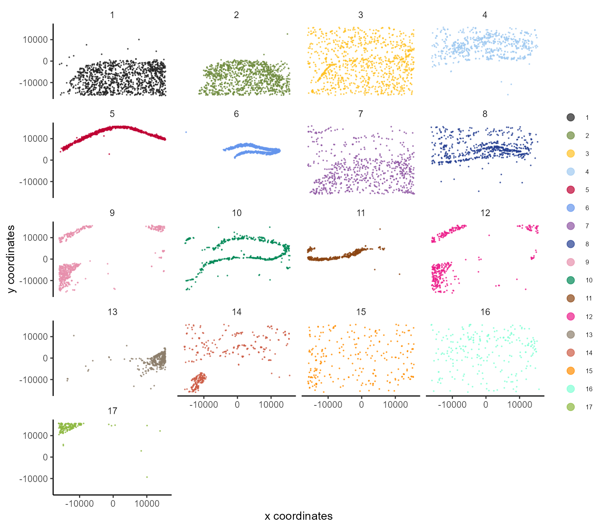
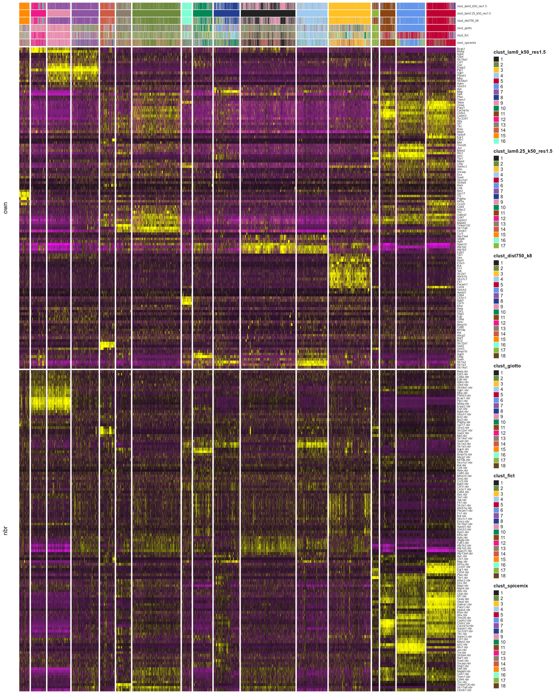
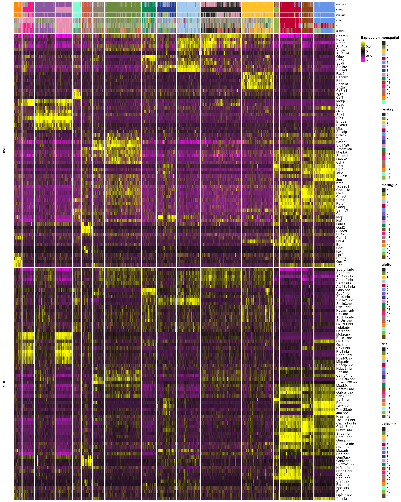

In this vignette, we reproduce the the results shown in Figure 4 of the paper, where we identified cell types in the mouse hippocampus and nearby regions.
Process data and perform clustering with different methods
Next, we preprocess the data and run the non-spatial and BANKSY runs:
# banksy parameters to use
lam <- c(0, 0.25) # lambda
res <- 1.5 # leiden clustering resolution
knbr <- 50 # number of neighbour-augmented space neighbours
npcs <- 20
# Store total counts and number of expressed genes
total_count <- colSums(expr)
num_genes <- colSums(expr > 0)
meta <- data.frame(total_count = total_count, num_genes = num_genes)
#Filter out top 2% and bottom 5% of cells
bank <- BanksyObject(own.expr = expr, cell.locs = locs, meta.data = meta)
cells_sample = sample(bank@meta.data$cell_ID, 500)
bank <- SubsetBanksy(bank, #cells = cells_sample,
metadata = total_count > quantile(total_count, 0.05) &
total_count < quantile(total_count, 0.98))
# total count normalize (to 100)
bank <- NormalizeBanksy(bank)
# compute neighbour expression matrix
bank <- ComputeBanksy(bank)
# z scale the rows (i.e., each gene, across all cells) of both the own and neighbour expression matrices
bank <- ScaleBanksy(bank)
# dim reduction and banksy clustering
bank <- Banksy:::RunPCA(bank, lambda = lam, npcs = npcs)
bank <- Banksy:::RunUMAP(bank, lambda = lam, npcs = npcs, nneighbors = knbr)
set.seed(42)
bank <- ClusterBanksy(bank, lambda = lam, pca = TRUE, npcs = npcs,
method = 'leiden', k.neighbors = knbr, resolution = res)Next, run MERINGUE:
Note
For brevity, the code chunk below for MERINGUE is not run as it takes a few hours.
w <- getSpatialNeighbors(bank@cell.locs, filterDist = 750, verbose=TRUE)
set.seed(42)
ptm <- proc.time()
com8 <- getSpatiallyInformedClusters(pca$x[,1:20], W = w, k = 8, verbose = TRUE)
print(proc.time() - ptm)Add MERINGUE spatial clustering to the BanksyObject:
# in either case, run this:
bank@meta.data<-cbind(bank@meta.data, clust_dist750_k8 = as.numeric(com8))Add Giotto, FICT and SpiceMix spatial clustering results:
alt_methods_bank <- readRDS(system.file('extdata/vfish_giotto_fict_spicemix.rds', package = 'Banksy'))
bank@meta.data<-cbind(bank@meta.data,
clust_fict = alt_methods_bank@meta.data$clust_fict_N_18,
clust_giotto = alt_methods_bank@meta.data$clust_giotto_N_18,
clust_spicemix = alt_methods_bank@meta.data$clust_spicemix_N_18)
bank <- ConnectClusters(bank, map.to = 'clust_lam0.25_k50_res1.5')Plot spatial plots and fix the colors of the clusters.
cnms <- clust.names(bank)
num_clusters<-max(bank@meta.data[,cnms])
hippo.cols<-Banksy:::getPalette(num_clusters)
names(hippo.cols)<-1:num_clusters
cluster.colors.names <- c(14,13,3,11,15,12,7,10,16,6,17,8,2)
cluster.colors <- c("#CD5B45", "#8C7E6C", "#FFC125", "#8B4513", "#FF8C00", "#ED1B89", "#8E55A2", "#008856", "#7FFFD4", "#6495ED", "#8DB73F", "#243E90", "#6E8B3D")
names(cluster.colors) <- cluster.colors.names
hippo.cols[cluster.colors.names] <- cluster.colors
# change the index in the cnms array below to plot the different results.
# print(cnms)
# [1] "clust_lam0_k50_res1.5" # Non-spatial
# [2] "clust_lam0.25_k50_res1.5" # BANKSY
# [3] "clust_dist750_k8" # MERINGUE
# [4] "clust_fict" # FICT (HMRF)
# [5] "clust_giotto" # GIOTTO (HMRF)
# [6] "clust_spicemix" # SPICEMIX (HMRF)Visualize the spatial plot:
clustering_name <- cnms[2] # change this
plotSpatial(bank,
by = clustering_name,
col.discrete = hippo.cols,
pt.size = 0.1,
type = 'discrete') + facet_wrap(~feature, ncol = 4)

VeraFISH clustering
Reorder genes, and plot heatmap.
reorder_genes <- function(bank, normalize_cols = FALSE,
scale_rows = FALSE){
# the data in bank must be unnormalized and unscaled.
gene_names = rownames(bank@own.expr)
x<-bank@own.expr
if (normalize_cols){
x<- t(t(x)/colSums(x))*100
}
if (scale_rows){
x<-t(scale(t(x), center = TRUE, scale = TRUE))
}
d_gene <- dist(as.matrix(x))
hc_gene <- hclust(d_gene)
bank@own.expr <- bank@own.expr[hc_gene$order,]
bank@nbr.expr <- bank@nbr.expr[hc_gene$order,]
return(bank)
}
bank<- reorder_genes(bank)
nonspatial.annot <- 'clust_lam0_k50_res1.5'
banksy.annot <- 'clust_lam0.25_k50_res1.5'
meringue.annot <- "clust_dist750_k8"
hmrf.annot <- "clust_giotto"
fict.annot <- 'clust_fict'
spicemix.annot <- 'clust_spicemix'
multiple.annots<-c(nonspatial = nonspatial.annot,
banksy = banksy.annot,
meringue = meringue.annot,
hmrf = hmrf.annot,
fict = fict.annot,
spicemix = spicemix.annot)
# png(paste0('hm_', 'all_genes_raster' , '.png'), height = 40/2, width = 32/2, units = 'in', res = 150)
# p.all.mk<-plotHeatmap(bank,features = rownames(bank@own.expr),
# assay = 'banksy',
# lambda = 0.25,
# cluster.row = TRUE,
# cex.row = 6,
# annotate = TRUE,
# annotate.by = multiple.annots,
# order.by = banksy.annot,
# col.discrete = hippo.cols,
# annotation.name = TRUE,
# rasterize = TRUE,
# cluster.column = TRUE,
# show_heatmap_legend= FALSE)
# print(p.all.mk)
# dev.off()
# knitr::include_graphics("hm_all_genes_raster.png")
plotHeatmap(bank,features = rownames(bank@own.expr),
assay = 'banksy',
lambda = 0.25,
cluster.row = TRUE,
cex.row = 6,
annotate = TRUE,
annotate.by = multiple.annots,
order.by = banksy.annot,
col.discrete = hippo.cols,
annotation.name = TRUE,
rasterize = TRUE,
cluster.column = TRUE,
show_heatmap_legend= FALSE)
DE gene analysis
mk_banksy_w_pair <- scran::pairwiseWilcox(bank@own.expr, groups = bank@meta.data$clust_lam0.25_k50_res1.5)
mk_banksy_t_pair <- scran::pairwiseTTests(bank@own.expr, groups = bank@meta.data$clust_lam0.25_k50_res1.5)
topmk_w<-scran::getTopMarkers(mk_banksy_w_pair$statistics, pairs = mk_banksy_w_pair$pairs)
topmk_t<-scran::getTopMarkers(mk_banksy_t_pair$statistics, pairs = mk_banksy_t_pair$pairs)
topmk_w_combined_any<-scran::getTopMarkers(mk_banksy_w_pair$statistics, pairs = mk_banksy_w_pair$pairs,
pairwise = FALSE)
topmk_t_combined_any<-scran::getTopMarkers(mk_banksy_t_pair$statistics, pairs = mk_banksy_t_pair$pairs,
pairwise = FALSE)
topmk_w_combined_all<-scran::getTopMarkers(mk_banksy_w_pair$statistics, pairs = mk_banksy_w_pair$pairs,
pairwise = FALSE, pval.type = 'all' )
cl1 = as.character(7);cl2 = as.character(8);cl3 = as.character(13)
set2w1 = topmk_w[[cl1]][[cl2]];set2t1 = topmk_t[[cl1]][[cl2]]
set2w2 = topmk_w[[cl1]][[cl3]];set2t2 = topmk_t[[cl1]][[cl3]]
set2w3 = topmk_w[[cl2]][[cl3]];set2t3 = topmk_t[[cl2]][[cl3]]
fimbria_de <- unique(c(set2w1, set2w2, set2w3, set2t1, set2t2, set2t3))
cl1 = as.character(12);cl2 = as.character(17);cl3 = as.character(5);cl4 = as.character(6)
set3w1 = topmk_w[[cl1]][[cl2]];set3t1 = topmk_t[[cl1]][[cl2]]
set3w2 = topmk_w[[cl1]][[cl3]];set3t2 = topmk_t[[cl1]][[cl3]]
set3w3 = topmk_w[[cl1]][[cl4]];set3t3 = topmk_t[[cl1]][[cl4]]
set3w4 = topmk_w[[cl2]][[cl3]];set3t4 = topmk_t[[cl2]][[cl3]]
set3w5 = topmk_w[[cl2]][[cl4]];set3t5 = topmk_t[[cl2]][[cl4]]
set3w6 = topmk_w[[cl3]][[cl4]];set3t6 = topmk_t[[cl3]][[cl4]]
ca3_de <- unique(c(set3w1, set3t1, set3w2, set3t2, set3w3, set3t3,
set3w4, set3t4, set3w5, set3t5, set3w6, set3t6))
names(bank@meta.data)[4:9] <- c('nonspatial', 'banksy', 'meringue', 'fict', 'giotto', 'spicemix')
nonspatial.annot <- 'nonspatial'; banksy.annot <- 'banksy'; meringue.annot <- 'meringue'
hmrf.annot <- "giotto"; fict.annot <- 'fict'; spicemix.annot <- 'spicemix'
multiple.annots<-c(nonspatial = nonspatial.annot, banksy = banksy.annot, meringue = meringue.annot,
hmrf = hmrf.annot, fict = fict.annot, spicemix = spicemix.annot)
all.mk1 <- Reduce(union, lapply(FUN = head, X = topmk_w_combined_all, n = 5))
all.mk2 = Reduce(union, list(fimbria_de, ca3_de))
all.mk = union(all.mk1, all.mk2)
bank.subset.all.mk<-SubsetBanksy(bank, features = all.mk)
d_gene.all.mk <- dist(bank.subset.all.mk@own.expr)
hc_gene.all.mk <- hclust(d_gene.all.mk)
bank.subset.all.mk@own.expr <- bank.subset.all.mk@own.expr[hc_gene.all.mk$order,]
bank.subset.all.mk@nbr.expr <- bank.subset.all.mk@nbr.expr[hc_gene.all.mk$order,]
plotHeatmap(bank.subset.all.mk,
features = all.mk,
assay = 'banksy',
lambda = 0.25,
cluster.row = FALSE,
cex.row = 10,
annotate = TRUE,
annotate.by = multiple.annots,
order.by = banksy.annot,
col.discrete = hippo.cols,
annotation.name = TRUE,
rasterize = TRUE,
cluster.column = TRUE)
Plot the gene expression spatial maps
plotSpatialFeatures(bank, by = all.mk, main = all.mk, main.size = 20,
col.highpoint=apply(bank@own.expr[all.mk,], 1, quantile, probs = 0.995),
col.lowpoint=apply(bank@own.expr[all.mk,], 1, quantile, probs = 0),
col.midpoint=apply(bank@own.expr[all.mk,], 1, quantile, probs = 0.5),
type = rep('continuous', length(all.mk)),
ncol = 5, pt.size = 0.1, legend.text.size = 12)
Note: vera_plot_0728_r1.5_L0.2_seed42_may27.R